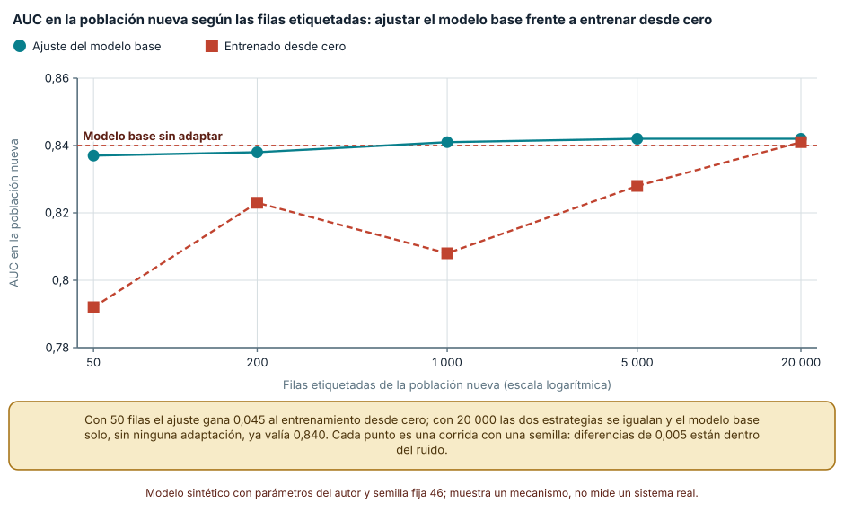
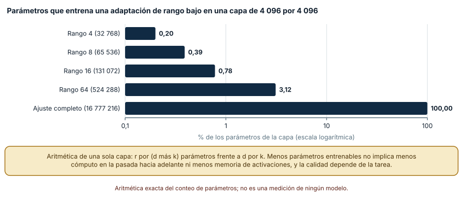
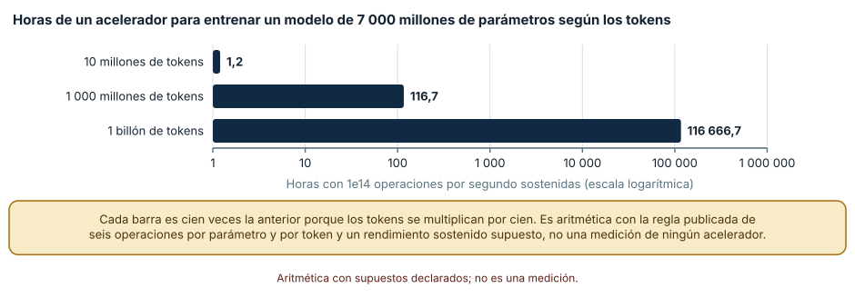

← SE-556 — Evaluación, sesgos y validación de modelos · ↑ Parte 46 · 📚 Índice completo · 🌐 Portal · SE-558 — Servir modelos: latencia, lotes y GPU →
Punto profesional y fundamento pedagógico
Punto profesional. La clase existe para que decidas con números cuándo vale la pena adaptar un modelo existente, cuánto cuesta hacerlo y qué se pierde por el camino. Casi ningún equipo entrena un modelo grande desde cero; lo habitual es partir de un modelo base y adaptarlo a una población, una tarea o un dominio nuevos con pocos datos. La decisión tiene cuatro costos que suelen discutirse por separado: el de los datos etiquetados, el de cómputo, el de operar una variante más y el de lo que el modelo olvida al adaptarse. La clase los mide con un modelo pequeño real (una regresión logística entrenada por gradiente, base y adaptada a una universidad nueva con 50 a 20 000 filas) y los lleva a la escala de un modelo de lenguaje con aritmética explícita de parámetros entrenables y de operaciones, que es una cuenta y no una medición.
Por qué aparece aquí. Sigue a SE-556: adaptar sin una evaluación sólida solo cambia el promedio. Reutiliza dos ideas: la comparación pareada de SE-555 y las evaluaciones de exactitud, utilidad, costo y latencia de SE-465 y SE-513. Prepara SE-558, donde el modelo adaptado debe servirse con una latencia y un costo, y SE-562, donde el cambio de un modelo base exige actualizar la evidencia.
Error conceptual que debe corregir. Creer que adaptar un modelo siempre es mejor que entrenar uno nuevo o que no adaptar. Con pocos datos, partir de un modelo base ganó mucho (0,837 de AUC con 50 filas frente a 0,792 desde cero); con 20 000 filas la ventaja desapareció (0,842 frente a 0,841). Y el modelo base, sin ninguna adaptación, ya alcanzaba 0,840 en el dominio nuevo, de modo que con pocos datos la adaptación aportó casi nada y con muchos podía ser innecesaria. La segunda corrección: la adaptación no es gratuita ni en cómputo ni en calidad; lo que se gana en la población nueva puede perderse en la original.
Secuencia de aprendizaje. Antes de ejecutar, predices cuántas filas necesita el modelo desde cero para alcanzar al base adaptado, cuánto pierde el modelo adaptado en la población original y qué fracción de los parámetros de una capa entrena una adaptación de rango bajo. Después ejecutas y comparas.
Evidencia de aprendizaje. decision-de-adaptacion.md con la comparación entre no adaptar, adaptar y entrenar desde cero a distintos tamaños de datos, la medida de olvido en la población original, el costo de cómputo con su método y la regla que decide.
Límite de la conclusión. El modelo es una regresión logística con un optimizador de gradiente sobre seis características sintéticas; no es una red profunda ni un modelo de lenguaje. Las cifras de parámetros y de operaciones para modelos grandes son aritmética con fórmulas publicadas y supuestos declarados, no mediciones; los tiempos del laboratorio son de una máquina de escritorio compartida y varían. No se entrenó ni se ajustó ningún modelo de lenguaje, no se usó GPU y no se invocó ningún modelo.
Trazabilidad fuente → afirmación
| Fuente primaria u oficial | Afirmación que respalda | Lo que no prueba |
|---|---|---|
| Hu et al., «LoRA: Low-Rank Adaptation of Large Language Models» | Propone congelar los pesos del modelo y entrenar matrices de rango bajo inyectadas en cada capa, reduciendo los parámetros entrenables. | No garantiza igualar el ajuste completo en toda tarea. |
| Kaplan et al., «Scaling Laws for Neural Language Models» | Relaciona la pérdida con el tamaño del modelo, los datos y el cómputo, y estima el cómputo de entrenamiento en función de parámetros y tokens. | Las leyes se ajustaron a un rango de modelos y no son universales. |
| Hoffmann et al., «Training Compute-Optimal Large Language Models» | Sostiene que, para un presupuesto de cómputo dado, el tamaño del modelo y el número de tokens deben crecer en proporción. | No dice qué hacer con una tarea concreta de adaptación. |
| Kirkpatrick et al., «Overcoming catastrophic forgetting in neural networks» | Describe el olvido catastrófico: aprender una tarea nueva degrada lo aprendido antes, y propone una penalización para mitigarlo. | Se estudió en redes y tareas distintas de las de esta clase. |
| scikit-learn, «Common pitfalls» | Recomienda ajustar los preprocesadores solo con datos de entrenamiento y usar tuberías. | No cubre la adaptación de modelos. |
Antes de empezar
Recupera lo aprendido en SE-556: una mejora se declara con intervalo y por grupo. La pregunta activa es: cuántos datos etiquetados de la población nueva tienes hoy, cuánto cuesta conseguir más y qué dejarías de hacer bien en la población antigua si adaptas el modelo?
Prerrequisitos
- Haber completado
SE-555ySE-556. - Saber qué es un gradiente y una época de entrenamiento; no se exige cálculo.
- Conocer las evaluaciones de sistemas generativos de
SE-465o la idea de modelo base deSE-457. - Python 3.11 o posterior, numpy 2.4.4 y scikit-learn 1.8.0; el laboratorio no necesita GPU.
Problema auténtico
*Avisos-ML* funciona bien en las universidades donde se entrenó. Una universidad nueva tiene otra carga de tareas y otra relación entre el historial y las entregas tardías, y solo ha etiquetado 200 entregas. El equipo discute tres caminos: usar el modelo tal cual, entrenar uno nuevo con los 200 datos o ajustar el modelo existente. Cada persona tiene una intuición. La primera dice que «un modelo grande ya sabe». La segunda, que «con datos propios siempre es mejor». La tercera, que ajustar «es barato y no daña nada».
Ninguna de las tres tiene una medida. El ajuste de un modelo de lenguaje ofrece la misma discusión a otra escala: ajustar completo o con adaptadores, cuántos ejemplos de la tarea hacen falta, cuánta GPU y cuánto tiempo, y si el modelo ajustado sigue haciendo bien lo que hacía.
Objetivos observables
Al terminar podrás:
- comparar tres estrategias (no adaptar, adaptar un modelo base, entrenar desde cero) según el número de datos etiquetados y reconocer el cruce donde dejan de diferir;
- medir el olvido: cuánto pierde el modelo adaptado en la población original;
- calcular los parámetros entrenables de una adaptación de rango bajo y compararlos con los de un ajuste completo;
- estimar el cómputo de entrenamiento con la regla de seis operaciones por parámetro y por token y decir qué supuestos la sostienen;
- escribir una regla de decisión que incluya el costo de datos, de cómputo, de operación y de olvido.
Mapa conceptual
Ver la notación fuente del diagrama
flowchart LR
A[Modelo base] --> B{¿Rinde en la población nueva?}
B -->|sí| C[Usarlo tal cual y medir]
B -->|no| D{¿Hay datos etiquetados?}
D -->|pocos| E[Adaptar pocos parámetros]
D -->|muchos| F[Adaptar completo o entrenar desde cero]
E --> G[Evaluar en población nueva y en la original]
F --> G
G --> H{¿Olvido aceptable y mejora real?}
H -->|sí| I[Registrar el modelo con su base y sus datos]
H -->|no| J[Más datos, otra adaptación o volver atrás]El mapa empieza por medir al modelo base en la población nueva, porque la primera pregunta es si adaptar sirve. La evaluación vuelve a la población original antes de aceptar: es el paso que un equipo apurado omite.
Temas y por qué importan
| Tema | Por qué cambia una decisión profesional | Evidencia mínima |
|---|---|---|
| Modelo base sin adaptar | Es la línea base que la adaptación debe superar. | Métrica en la población nueva |
| Datos etiquetados | Son el recurso más caro y el que decide la estrategia. | Curva de métrica contra filas |
| Adaptación frente a desde cero | Con pocos datos gana el modelo base; con muchos se igualan. | Cruce medido |
| Olvido | El modelo adaptado puede empeorar donde ya funcionaba. | Métrica en la población original |
| Adaptación de rango bajo | Reduce parámetros entrenables y almacenamiento por variante. | Conteo de parámetros |
| Cómputo de entrenamiento | Orden de magnitud para presupuestar. | Fórmula con supuestos |
| Operar una variante más | Cada modelo adaptado se despliega, vigila y retira. | Costo de operación por variante |
Conceptos y decisiones
1. El modelo base es la línea base
Antes de adaptar, hay que medir el modelo base en la población nueva. En el laboratorio, el modelo base se entrenó con 40 000 filas durante 30 épocas (1,14 s) y alcanzó un AUC de 0,858 en su población de origen; en el dominio nuevo, sin adaptación, alcanzó 0,840. La adaptación solo puede justificarse por la diferencia sobre esos 0,840, no sobre cero. Con modelos de lenguaje ocurre lo mismo: antes de ajustar hay que medir qué hace el modelo con un buen *prompt*, con ejemplos y con recuperación de contexto (SE-458, SE-510), porque si eso alcanza, el ajuste es un costo evitable.
2. Pocos datos: el modelo base gana
Se entrenó, para cada tamaño de datos de la población nueva, un modelo desde cero (20 épocas) y se ajustó el base (5 épocas con un paso de aprendizaje pequeño y constante). El AUC en un conjunto de evaluación del dominio nuevo, con 50, 200, 1 000, 5 000 y 20 000 filas, fue: desde cero 0,792, 0,823, 0,808, 0,828 y 0,841; ajustado 0,837, 0,838, 0,841, 0,842 y 0,842. Con 50 filas el ajuste ganó 0,045; con 5 000, 0,014; con 20 000, 0,001. El desde cero no sube de forma monótona porque con pocas filas el resultado depende mucho de la inicialización (la dispersión de SE-555 vuelve aquí), y esa es una razón más para comparar con varias corridas. La conclusión práctica es el cruce: hay un volumen de datos propios a partir del cual el modelo base deja de aportar, y conviene conocerlo para saber cuándo conviene dejar de ajustar.
3. El olvido: lo que se pierde en la población original
Un modelo ajustado a la universidad nueva se evaluó también en la población de origen. Su AUC allí fue 0,856, 0,855, 0,855, 0,853 y 0,855 con las cinco cantidades de datos, frente a 0,858 antes del ajuste: una pérdida de entre 0,002 y 0,005. Es pequeña porque el modelo es lineal y las dos poblaciones se parecen. En redes profundas con tareas muy distintas, el olvido catastrófico descrito por Kirkpatrick y colegas puede ser grande: aprender la tarea nueva sobrescribe lo aprendido. Lo que la clase enseña no es la magnitud, sino el hábito de medirlo: toda adaptación se evalúa en la población nueva y en la original, y se acepta o se rechaza con la pérdida a la vista. Si el modelo adaptado reemplaza al base para todos, el olvido es un costo directo; si convive con él (uno por universidad), es un costo de operación.
4. Adaptación de rango bajo: cuánto se entrena
Ajustar todos los parámetros de un modelo grande exige guardar un gradiente y un estado del optimizador por cada uno y una copia del modelo por variante. La adaptación de rango bajo (LoRA) congela los pesos y entrena, para una capa de dimensiones d por k, dos matrices de rango r: una de d por r y otra de r por k, con r mucho menor que d y k. Para una capa de 4 096 por 4 096 (16 777 216 parámetros), el rango 4 entrena 32 768 (0,20 %), el 8 entrena 65 536 (0,39 %), el 16 entrena 131 072 (0,78 %) y el 64 entrena 524 288 (3,12 %). Cada variante necesita guardar solo esas matrices, no una copia del modelo. El costo es una capacidad menor que el ajuste completo y una elección más (el rango, qué capas); la propia fuente reporta resultados comparables con el ajuste completo en las tareas que probó, y eso hay que verificarlo en la tarea de cada equipo.
5. Cuánto cómputo cuesta entrenar
Una aproximación publicada estima el cómputo de entrenamiento de un modelo denso como seis operaciones de coma flotante por parámetro y por token procesado (dos en la pasada hacia adelante y cuatro en la de retroceso). Con 7 000 millones de parámetros: 1 billón de tokens requieren 4,2 × 10²² operaciones, que a 10¹⁴ operaciones por segundo sostenidas serían unas 116 700 horas de un acelerador; 1 000 millones de tokens, 4,2 × 10¹⁹ operaciones y unas 117 horas; 10 millones de tokens, 4,2 × 10¹⁷ operaciones y 1,2 horas. Es aritmética, no una medición: el rendimiento sostenido real depende del hardware, del paralelismo y de la implementación, y suele ser una fracción del pico. Sirve para ver por qué el ajuste con millones de tokens cabe en horas y el entrenamiento con billones no cabe en un equipo pequeño, y para formular la pregunta correcta: cuántos tokens de datos propios hay.
6. Datos de verdad, cómputo y variantes
El presupuesto de una adaptación no se reduce al cómputo. Los datos etiquetados cuestan personas; en el laboratorio, ir de 200 a 5 000 filas mejora el AUC de 0,838 a 0,842, cuatro milésimas, y obtener las 4 800 etiquetas adicionales puede costar más que cualquier GPU. Cada variante adaptada es un modelo más que registrar, desplegar, vigilar y retirar (SE-559, SE-560). Una regla útil: adaptar solo si la mejora medida en la población nueva, descontada la pérdida en la original, supera el costo total de datos, cómputo y operación de la variante.
7. Tiempos de entrenamiento: pequeños, pero medibles
En el laboratorio, ajustar el modelo base con 20 000 filas tomó unos 100 ms frente a unos 370 ms de entrenar desde cero; con 50 filas, 9 ms frente a 49 ms. Un boosting de 80 iteraciones tardó entre 0,8 s con 1 000 filas y 3,9 s con 64 000. Estos tiempos son de una máquina de escritorio compartida, varían de una ejecución a otra y no deben usarse para estimar un modelo grande: lo que enseñan es la forma de medirlos (con el mismo código, repetidos) y que el costo de entrenar no crece proporcionalmente a los datos en los tamaños pequeños, porque domina el costo fijo.
8. Cuándo no ajustar
No se ajusta cuando el modelo base ya rinde, cuando una instrucción o un contexto recuperado bastan, cuando no hay datos etiquetados de calidad, o cuando no hay quien opere una variante más. El ajuste de un modelo de lenguaje con unos cientos de ejemplos puede enseñar el formato y el tono de una respuesta, y casi nunca enseña conocimiento nuevo fiable; para el conocimiento, la recuperación de documentos (SE-510) suele ser más barata y más fácil de actualizar. Un ajuste hecho con datos que contienen información personal además puede memorizarla: la privacidad entra en la decisión (SE-561).
9. Qué registrar
Cada modelo adaptado se registra con su modelo base (nombre, versión y huella), el conjunto de datos de adaptación con su huella, la configuración (pasos, épocas, rango si aplica), la métrica en la población nueva y en la original, y el costo (horas de acelerador y de personas). Sin esa cadena, una auditoría no puede responder de dónde viene el comportamiento del modelo, y una actualización del modelo base no puede planificarse (hay que readaptar y reevaluar).
Poco dato: base frente a desde cero
La primera medida compara las tres estrategias según los datos de la población nueva.

Cómo leer la figura. El eje horizontal es el número de filas etiquetadas de la población nueva (escala logarítmica) y el vertical el AUC en esa población; la línea horizontal punteada es el modelo base sin adaptar. Mira primero la distancia entre la línea del ajuste y la del entrenamiento desde cero con 50 filas, y cómo se cierra con 20 000. Dónde deja de valer: es un modelo lineal con seis características y dos poblaciones que se parecen; con una población muy distinta, o con una red profunda, el cruce ocurre en otro punto y el modelo base puede ser un mal punto de partida. Cada punto es una sola corrida con una semilla, de modo que diferencias de 0,005 están dentro del ruido de SE-555.
El costo en parámetros
La segunda medida cuenta cuánto se entrena según el rango de la adaptación.

Cómo leer la figura. Cada barra es un rango y su longitud el porcentaje de parámetros de la capa que se entrenan; la barra gris es el ajuste completo. Mira primero que incluso el rango 64 entrena poco más del 3 % de la capa. Dónde deja de valer: el porcentaje es aritmético para una capa de 4 096 por 4 096; el total depende de cuántas capas se adaptan, y la calidad depende de la tarea. Menos parámetros entrenables no implica menos cómputo en la pasada hacia adelante ni menor memoria de activaciones.
El cómputo a distintas escalas
La tercera medida pone en horas el cómputo de entrenamiento de un modelo de 7 000 millones de parámetros.

Cómo leer la figura. Cada barra es una cantidad de tokens de entrenamiento y su longitud, en escala logarítmica, las horas de un solo acelerador. Mira primero que cada barra es cien veces mayor que la anterior, porque los tokens se multiplican por cien. Dónde deja de valer: es aritmética con un rendimiento sostenido supuesto de 10¹⁴ operaciones por segundo; el rendimiento real depende del hardware y del paralelismo y rara vez alcanza el pico, y el modelo no incluye la evaluación ni los reintentos. No es una medición de ningún acelerador.
Definiciones de trabajo
- Modelo base: modelo entrenado con datos amplios que sirve de punto de partida.
- Ajuste fino: entrenamiento adicional de un modelo base con datos de la tarea o población nueva.
- Adaptación de rango bajo (LoRA): ajuste que congela los pesos y entrena matrices de rango bajo añadidas a las capas.
- Olvido catastrófico: pérdida de lo aprendido antes al aprender algo nuevo.
- Época: una pasada completa por los datos de entrenamiento.
- Cómputo de entrenamiento: número de operaciones de coma flotante necesarias para entrenar.
- Variante: modelo adaptado que se opera por separado.
Ejemplo mínimo
El conteo de parámetros de una adaptación de rango bajo en tres líneas:
d = k = 4096
for r in (4, 8, 16, 64):
print(r, r * (d + k), f"{r * (d + k) / (d * k):.2%}")La salida (4 32768 0.20%, 8 65536 0.39%, y así) es el conteo de la clase. Lo que no dice es si la calidad alcanza: eso se mide en la población nueva y en la original.
Ejemplo profesional
*Escenario ilustrativo: las cifras y los resultados que aparecen en este ejemplo son supuestos de la narración, no mediciones.*
El equipo de *Avisos-ML* tiene 200 entregas etiquetadas de la universidad nueva. Mide el modelo base: AUC 0,84 en esa población y 0,86 en la original. Ajusta el modelo con las 200 filas y obtiene 0,85 en la nueva y 0,855 en la original. El intervalo de la diferencia, calculado con la evaluación de SE-556 sobre 4 000 filas de evaluación, incluye el cero en la nueva y no lo incluye en la original (una pérdida real, pequeña). El equipo decide no adaptar: la mejora no es distinguible del ruido y la variante tendría un costo de operación. Define además un disparador: cuando haya 2 000 filas etiquetadas, repite la comparación. Cuatro meses después, con 2 400 filas, la diferencia sí supera el ruido y se adapta, registrando el modelo base, la huella de los datos y las dos métricas. La decisión no prueba que ajustar sea mejor; prueba que se tomó con una medición y un disparador.
Práctica guiada
- Mide el modelo base de un sistema tuyo en una población nueva y escribe el número que la adaptación debe superar.
- Ejecuta
python scripts/experiments_part46_a.py 557y reproduce la curva de datos; repítela con tres semillas y dibuja la dispersión. - Mide el olvido: evalúa el modelo adaptado en la población original y calcula la pérdida con su intervalo.
- Calcula los parámetros entrenables de una adaptación de rango bajo para un modelo que usas y compáralos con el ajuste completo.
- Estima con la regla de seis operaciones el cómputo de un ajuste de 10 millones de tokens y escribe qué supuesto de rendimiento hiciste.
Ejercicios
- Básico. Explica por qué con 20 000 filas el ajuste del modelo base casi no mejora al entrenado desde cero y qué decisión práctica se sigue.
- Intermedio. Repite la comparación con tres semillas y dibuja la dispersión de cada estrategia; decide a partir de cuántas filas la diferencia supera el ruido.
- Avanzado. Para un modelo de lenguaje de 7 000 millones de parámetros, compara el costo en parámetros entrenables y en memoria de optimizador de un ajuste completo con una adaptación de rango 16 en todas las capas de atención, y lista qué mediciones faltan para confiar en el resultado.
Reto verificable
Entrega decision-de-adaptacion.md con la medida del modelo base en la población nueva, la curva de métrica contra datos para ajuste y entrenamiento desde cero con al menos tres semillas, la pérdida en la población original, el costo de cómputo con su fórmula y supuestos, y la regla de decisión con su disparador. Es válido si otra persona reproduce la curva y puede decir a partir de cuántos datos tu regla cambia de decisión.
Caso conductor
*Avisos-ML* decide no adaptar con 200 filas y adaptar con 2 400, con la evidencia registrada. SE-558 toma el modelo elegido y se pregunta cuánto cuesta servirlo: latencia, lotes y aceleradores.
Preguntas frecuentes
¿Cuántos datos necesito para ajustar?
Depende de la tarea y del modelo; no hay un número. En este laboratorio, 50 filas ya daban un modelo útil partiendo de la base y 20 000 igualaban al entrenamiento desde cero. Mide con tus datos la curva y el cruce.
¿LoRA siempre es mejor que ajustar todo?
No. Reduce parámetros entrenables y almacenamiento por variante, y suele acercarse al ajuste completo, pero no lo garantiza. Compara en tu tarea con tu evaluación.
¿Ajustar sirve para que el modelo sepa datos nuevos?
Poco y de forma poco fiable para hechos. Para conocimiento que cambia, la recuperación de documentos es más barata y más fácil de actualizar y de auditar; el ajuste es mejor para formato, tono y comportamiento.
¿Qué pasa cuando sale una versión nueva del modelo base?
Hay que readaptar y reevaluar. Por eso el registro guarda la versión del modelo base y la huella de los datos de adaptación.
Fallo controlado y diagnóstico
Fallo. Tras ajustar el modelo con datos de la universidad nueva, los estudiantes de las universidades originales reciben menos recordatorios útiles. El AUC global del tablero apenas se movió.
Diagnóstico paso a paso. (1) Se separa la métrica por universidad: la nueva mejora 0,01 y las originales caen 0,03. (2) Se comprueba que el modelo adaptado reemplazó al base para todos. (3) Se mide la población original con el conjunto de evaluación congelado: pérdida real. (4) El promedio global se mantenía porque la población nueva era pequeña.
Corrección. Se revierte al modelo base para las universidades originales, se despliega el adaptado solo para la nueva y se añade al criterio de aceptación una cota de pérdida máxima en la población original. La lección es que un promedio global puede esconder el olvido, y que la evaluación en la población original debe ser parte de la puerta de aceptación.
Errores comunes y cómo corregirlos
- No medir el modelo base en la población nueva. Corrige con esa medida como línea base.
- Ajustar con pocos datos sin repetir. Corrige con varias semillas y su dispersión.
- Evaluar solo en la población nueva. Corrige midiendo el olvido en la original.
- Reemplazar el modelo base por el adaptado para todos. Corrige con variantes por población o con una cota de pérdida.
- Presupuestar solo el cómputo. Corrige sumando datos, operación y retiro.
- Ajustar para enseñar hechos. Corrige con recuperación de documentos.
Entorno y archivos clave
scripts/experiments_part46_a.py: funcióne557con el modelo base, las tres estrategias, el olvido, el conteo de parámetros y la aritmética de cómputo; se ejecuta conpython scripts/experiments_part46_a.py 557.scripts/experiments_part46_lab.py: generador sintético de dos poblaciones con parámetros de deriva.scripts/figures_part46_a.py: las tres figuras de la clase.- numpy 2.4.4 y scikit-learn 1.8.0 (ver
scripts/requirements-part46.txt). Tarda unos segundos y no usa GPU.
Seguridad, ética y accesibilidad
Los datos son sintéticos. Ajustar un modelo con datos de personas puede hacer que el modelo los memorice y los revele (SE-561); hay que minimizar y proteger los datos de adaptación y decidir si el modelo ajustado hereda sus obligaciones. El cómputo tiene un costo energético y económico que debe entrar en la decisión, en línea con SE-009. Adaptar un modelo a una población con pocos datos puede amplificar sesgos de esa muestra: la evaluación por grupos de SE-556 se repite tras el ajuste. Las figuras tienen texto alternativo completo y no dependen solo del color.
Puente hacia el trabajo con agentes
Un agente de código puede lanzar ajustes con facilidad y gastar presupuesto de cómputo sin que nadie lo note. Fija un tope de costo y de tiempo por corrida, exige que registre el modelo base, los datos y la métrica en la población nueva y en la original, y que compare siempre con la línea base de no adaptar. Un agente que propone ajustar «porque mejora» sin la medida del olvido propone medio experimento. Y si el agente depende de un modelo de lenguaje adaptado por un tercero, trata cada cambio de versión del modelo base como un cambio de comportamiento que exige repetir la evaluación (SE-513).
Transferencia
Toma un modelo de tu organización que se usa en más de una población. Mide su rendimiento en la más pequeña y escribe cuántos datos nuevos necesitarías para que el ajuste supere el ruido. Calcula el costo de obtener esos datos y compáralo con el de cómputo. Decide con el cociente si ajustar, esperar o dejarlo como está.
Evaluación y evidencia
| Criterio | Evidencia aceptable | Rechazo |
|---|---|---|
| Línea base | Modelo base medido en la población nueva | «El modelo es bueno» |
| Curva | Métrica contra datos con varias semillas | Un solo punto |
| Olvido | Métrica en la población original antes y después | Solo la población nueva |
| Costo | Datos, cómputo y operación con supuestos | Solo horas de GPU |
| Decisión | Regla con disparador numérico | «Ajustemos» |
Fuentes
- Hu, E. et al. «LoRA: Low-Rank Adaptation of Large Language Models».
- Kaplan, J. et al. «Scaling Laws for Neural Language Models».
- Hoffmann, J. et al. «Training Compute-Optimal Large Language Models».
- Kirkpatrick, J. et al. «Overcoming catastrophic forgetting in neural networks».
- scikit-learn. «Common pitfalls and recommended practices».
Límites y siguiente paso
El modelo base, las dos poblaciones y las cantidades de datos son construcciones del autor sobre un modelo lineal; las cifras de parámetros y de cómputo para modelos grandes son aritmética con una regla publicada y un rendimiento supuesto, no mediciones. No se ajustó ningún modelo de lenguaje ni se usó acelerador. El siguiente paso, SE-558, se ocupa de servir el modelo elegido: latencia, lotes y aceleradores.
Glosario
| Término | Definición breve |
|---|---|
| Modelo base | Modelo amplio que sirve de punto de partida |
| Ajuste fino | Entrenamiento adicional con datos de la tarea nueva |
| LoRA | Adaptación con matrices de rango bajo y pesos congelados |
| Olvido catastrófico | Pérdida de lo aprendido al aprender algo nuevo |
| Época | Una pasada completa por los datos |
| Variante | Modelo adaptado que se opera por separado |
← SE-556 — Evaluación, sesgos y validación de modelos · ↑ Parte 46 · 📚 Índice completo · 🌐 Portal · SE-558 — Servir modelos: latencia, lotes y GPU →